Embedded and Networked Things (ENT-Lab) Group
Department of Information Engineering and Computer Science
–
University of Trento
Open Source Releases
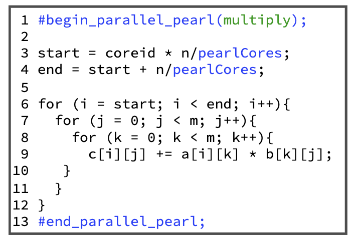
EWSN 2025
PEARL: Power- and Energy-Aware Multicore Intermittent Computing
Khakim Akhunov, Eren Yildiz, Kasim Sinan Yildirim
Source code
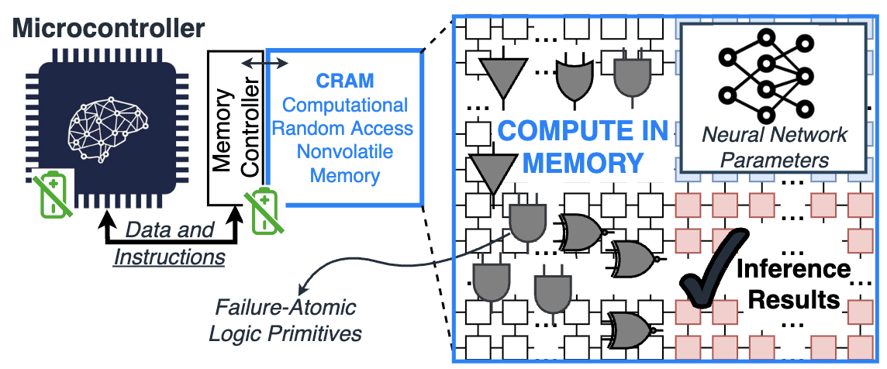
ACM TECS 2025
Adaptive Computing in Memory Meets Conventional Batteryless Platforms
Khakim Akhunov, Kasim Sinan Yildirim, Jongouk Choi, Changhee Jung
Source code
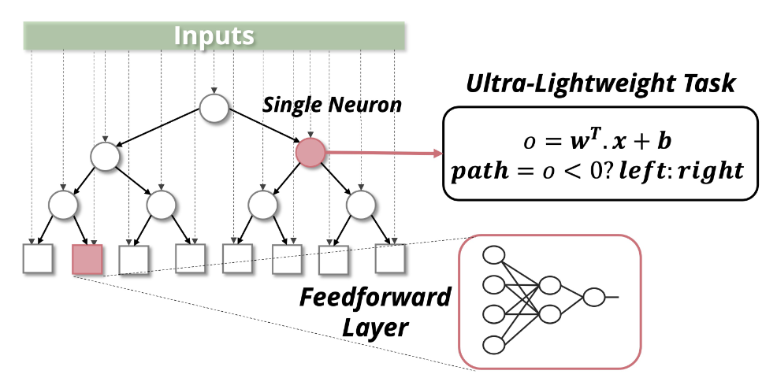
ACM SenSys 2024
Fast-Inf: Ultra-Fast Embedded Intelligence on the Batteryless Edge
Leonardo Lucio Custode, Pietro Farina, Eren Yildiz, Renan Beran Kilic, Kasim Sinan Yildirim, Giovanni Iacca
Source code
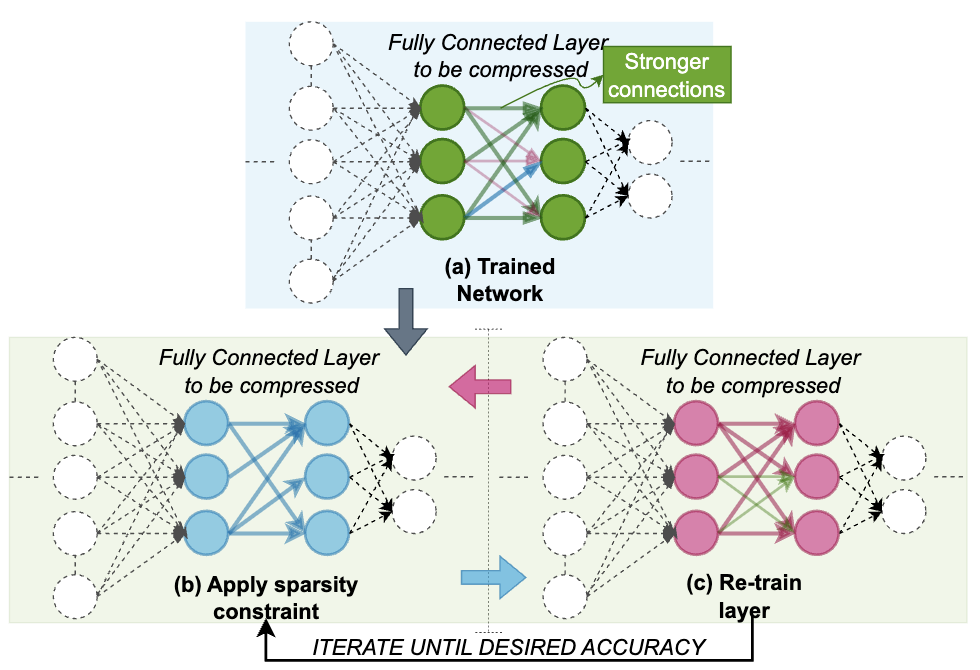
EWSN 2024
Memory-efficient Energy-adaptive Inference of Pre-Trained Models on Batteryless Embedded Systems
Pietro Farina, Subrata Biswas, Eren Yıldız, Khakim Akhunov, Saad Ahmed, Bashima Islam, Kasım Sinan Yıldırım
Source code
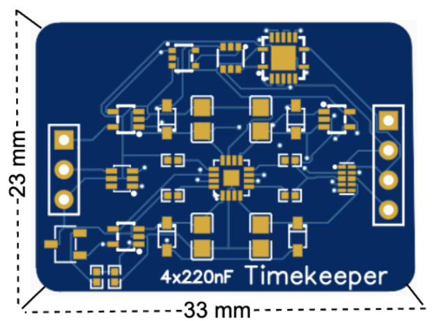
EnsSys 2024
On Tracking Time with Better Resolution and Range in Batteryless Systems
Eren Yildiz, Davide Cavedon, Kasim Sinan Yildirim
Source code
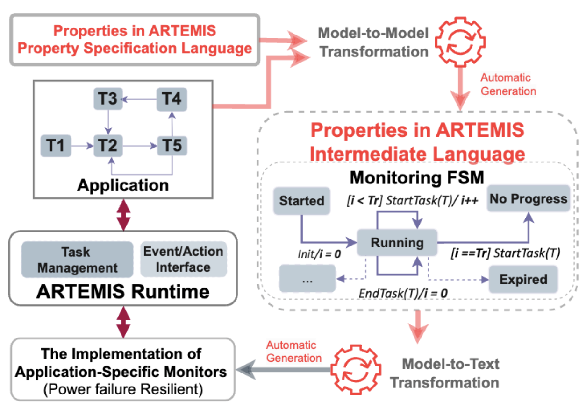
EuroSys 2024
Adaptable Runtime Monitoring for Intermittent Systems
Eren Yildiz, Khakim Akhunov, Lorenzo Antonio Riva, Arda Goknil, Ivan Kurtev, Kasim Sinan Yildirim
Source code
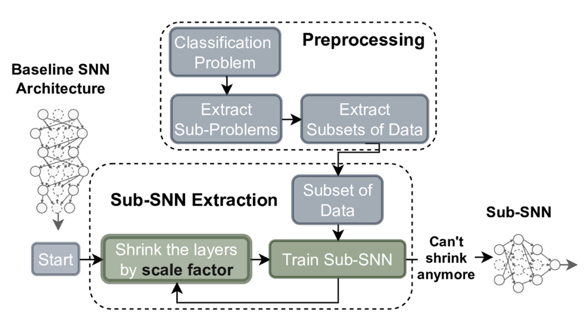
IEEE TETCI 2024
Efficient Processing of Spiking Neural Networks via Task Specialization
Muath Abu Lebdeh, Kasim Sinan Yildirim, Davide Brunelli
Source code
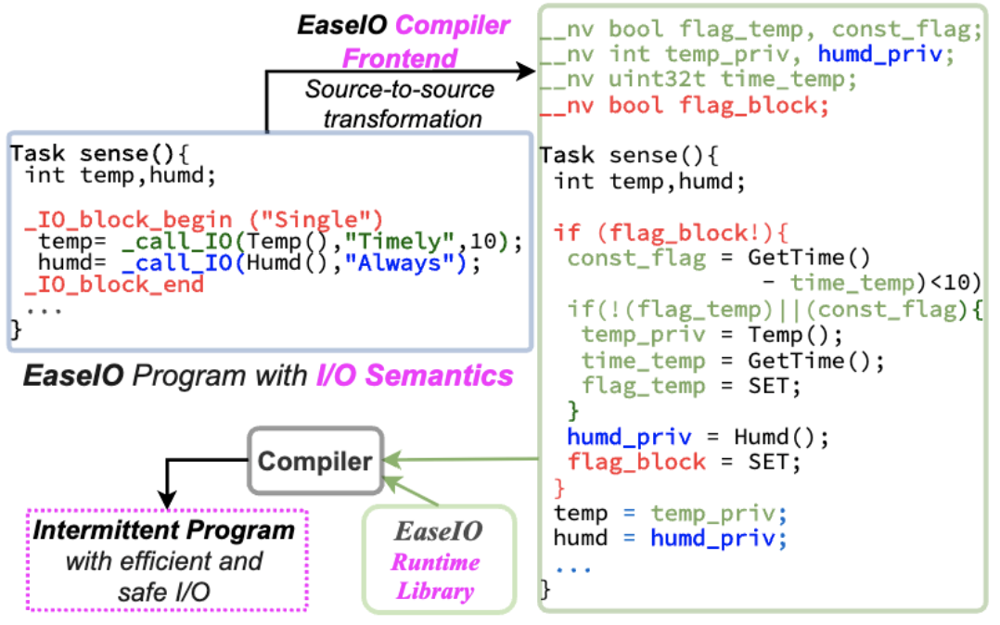
EuroSys 2023
Efficient and Safe I/O Operations for Intermittent Systems
Eren Yildiz, Saad Ahmed, Bashima Islam, Josiah Hester, Kasim Sinan Yildirim
Source code
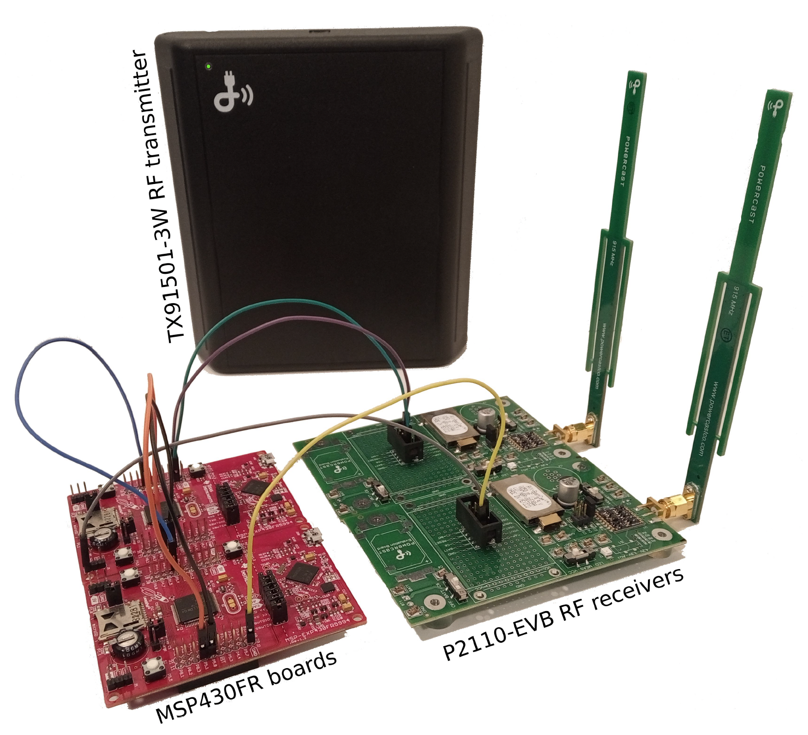
UbiComp'22
IMWUT
AdaMICA: Adaptive Multicore Intermittent Computing
Khakim Akhunov, Kasim Sinan Yildirim
Source code
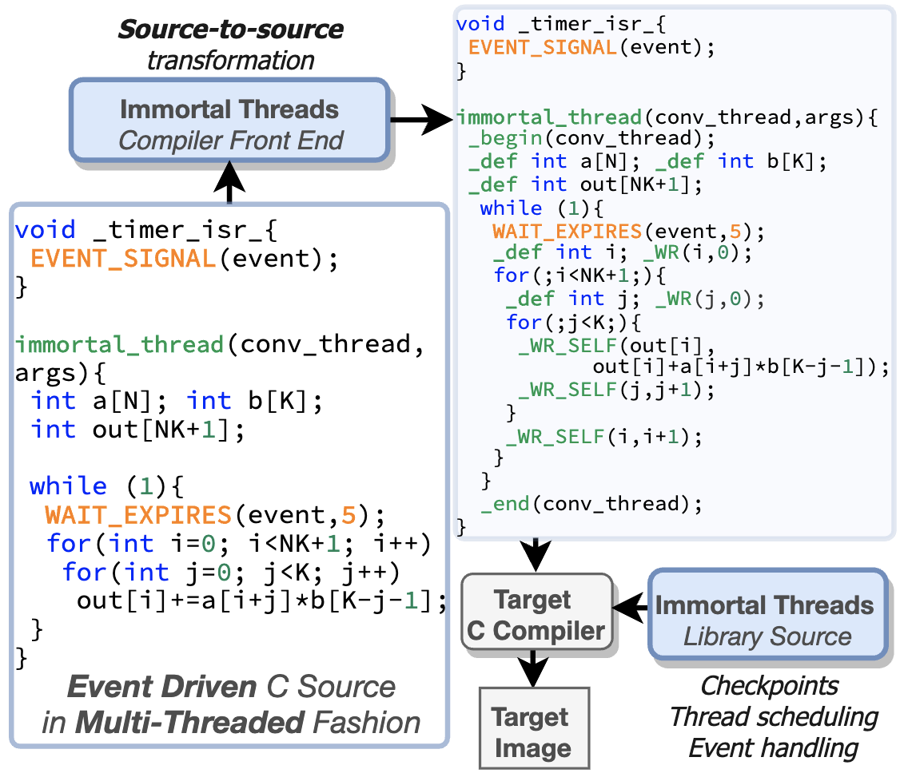
USENIX OSDI'22
Immortal Threads: Multithreaded Event-driven Intermittent Computing on Ultra-Low-Power Microcontrollers
Eren Yıldız, Lijun Chen, Kasim Sinan Yıldırım
Source code
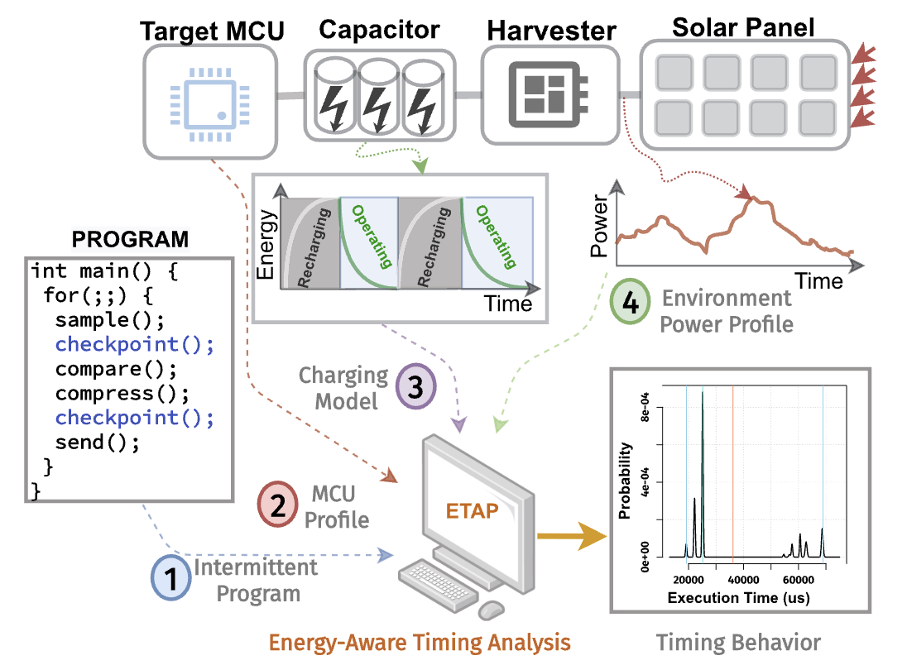
ACM TECS 2022
ETAP: Energy-aware Timing Analysis of Intermittent Programs
Ferhat Erata, Eren Yildiz, Arda Goknil, Kasim Sinan Yildirim, Jakub Szefer, Ruzica Piskac, Gokcin Sezgin
Source code
Website source:
sinanyil81.github.io
Last update:
January 01, 2026